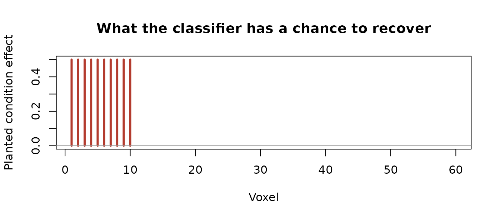
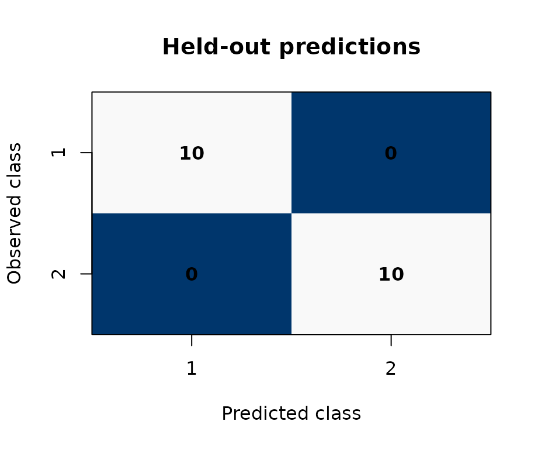

Use classification when the scientific question is predictive: can a condition label be recovered from a subject’s effect pattern when that subject was not used to train the decoder? This is different from asking whether a component explains much variation or whether a contrast is non-zero.
This page follows one complete path:
factor definition -> DKGE representation -> class weight matrix -> held-out predictions -> accuracy and confusionThe weight matrix is the conceptual bridge. It says how named beta rows become the class patterns that the classifier sees; the decoder never infers that mapping from effect names by magic.
There are two distinct cross-validation contracts. The default
mode = "auto" uses subject-level folds but selects the
faster "cell" path for within-subject targets; its
classifier is cross-validated, while the global DKGE basis has seen
every subject. Use mode = "cell_cross" when the basis
itself must also be re-estimated without each held-out subject. The
primary example below uses that stricter end-to-end path.
What is being classified?
We define two experimental factors—condition (A versus B) and four time points—and construct a design kernel that encodes their effect structure:
factors <- list(cond = list(L = 2), time = list(L = 4))
kern <- design_kernel(factors, basis = "effect")
q <- nrow(kern$K) # number of effect-coded columns
q
#> [1] 7We simulate 10 subjects, each with q design effects and
60 voxels. A detectable condition signal is planted only in voxels 1–10.
That artificial localization gives the example a visible ground truth;
the remaining voxels are noise.
n_subjects <- 10L
v <- 60L
make_subject <- function(id) {
# design: identity matrix over effects (one trial per effect)
design <- diag(q)
colnames(design) <- rownames(kern$K)
# signal: condition contrast (first effect column) drives voxels 1-10
signal <- matrix(0, nrow = q, ncol = v)
signal[1, 1:10] <- 0.5 # positive signal for condition contrast
beta <- signal + matrix(rnorm(q * v, sd = 1.0), nrow = q)
dkge_subject(beta, design = design, id = paste0("sub", id))
}
subjects <- lapply(seq_len(n_subjects), make_subject)
The signal plot describes the simulation, not the model output. The honest performance question remains whether a decoder trained without one subject can classify that held-out subject’s A and B patterns.
Fit the DKGE model using the design kernel.
design_kernel() returns a list with $K (the
q×q kernel matrix) and $info (factor metadata used by
dkge_targets()):
fit <- dkge(subjects, K = kern, rank = 2)
fit
#> <dkge>
#> Subjects: 10
#> Effects: 7
#> Rank: 2
#> Subject weighting: mfa_sigma1 (tau = 0.3)
#> Weight range: 0.8058 to 1.1005 (median = 1.008, CV = 0.08452)
#> Effective subject mass: 9.936 of 10 usableClassification targets
dkge_targets() maps design formula terms to
classification contrasts using the factor metadata stored in the kernel.
Each term becomes a binary (or multi-class) decoding problem over the
group embedding.
targets <- dkge_targets(fit, ~ cond)
length(targets) # one target per formula term
#> [1] 1
targets[[1]]$name # "cond"
#> [1] "cond"
nrow(targets[[1]]$weight_matrix) # 2 classes (A vs B)
#> [1] 2The weight matrix transforms subject-level beta vectors into class-specific pattern vectors for the downstream classifier.
Cross-validated decoding
cls <- dkge_classify(
fit,
targets = targets,
method = "lda", # "lda" (default) or "logit"
mode = "cell_cross",
n_perm = 99, # coarse permutation resolution for this example
seed = 99
)
print(cls)
#> DKGE Classification
#> --------------------
#> Targets: 1
#> Classifier: lda
#> Metrics: accuracy, logloss
#> Permutations: 99
#> cond: accuracy=1.000, logloss=0.000
#> accuracy p=0.010, logloss p=0.010The result is a dkge_classification object. Each entry
of $results corresponds to one target:
res <- cls$results[["cond"]]
res$mode # "cell_cross": the basis is refitted inside each fold
#> [1] "cell_cross"
res$metrics # cross-validated accuracy and log-loss
#> accuracy logloss
#> 1.000000e+00 9.999779e-13The estimand is subject-level LOSO accuracy for classifying the condition patterns, with both the DKGE basis and classifier refit without the held-out subject. In this seeded simulation the planted condition signal yields:
condition_accuracy <- unname(res$metrics[["accuracy"]])
condition_log_loss <- unname(res$metrics[["logloss"]])
c(accuracy = condition_accuracy, logloss = condition_log_loss)
#> accuracy logloss
#> 1.000000e+00 9.999779e-13An accuracy of 1 means every held-out condition row was classified correctly in this deliberately strong toy example. It is not an estimate of performance on an external dataset.
Accuracy is easier to interpret alongside the errors it summarizes:

Rows are observed classes and columns are predictions. A strong diagonal means the held-out labels were recovered; off-diagonal counts reveal which classes are confused. For imbalanced classes, always pair this display with class counts and a metric such as balanced accuracy or log-loss.
Convert to a tidy data frame for plotting or downstream analysis:
df <- as.data.frame(cls)
head(df)
#> target metric value p_value n_perm
#> 1 cond accuracy 1.000000e+00 0.01 99
#> 2 cond logloss 9.999779e-13 0.01 99Permutation p-values
When n_perm > 0, each target gets an empirical
p-value from the sign-flip max-T permutation distribution:
res$p_values # named numeric vector per metric (NULL when n_perm = 0)
#> accuracy logloss
#> 0.01 0.01With 99 permutations and the plus-one correction, the smallest attainable p-value is (1/(99+1)=0.01). A value at that boundary means none of the sampled permutations was as extreme; it does not provide finer resolution than 0.01.
Subject-level predictions
Individual predictions and fold assignments live in
$row_data:
head(res$row_data[, c("subject_label", "class_label", "fold")])
#> subject_label class_label fold
#> 1 sub1 1 1
#> 2 sub1 2 1
#> 3 sub2 1 2
#> 4 sub2 2 2
#> 5 sub3 1 3
#> 6 sub3 2 3Full predicted probabilities are in res$probabilities
(rows = subject × class combinations, columns = class labels).
Two modes: cell vs cell_cross
The mode argument controls how the group basis is
applied at test time:
| Mode | Basis used | Use case |
|---|---|---|
"cell" |
Global fit$U
|
Fast; mild basis-step leakage — fit$U saw all
subjects |
"cell_cross" |
Fold-specific LOSO U_fold
|
Basis and classifier refit per subject fold |
"delta" |
Global fit$U + subject labels |
Subject-level binary test; requires y argument |
"auto" (default) selects "cell" for
within-subject targets and "delta" for between-subject
targets.
The strict route refits the basis for every held-out subject, so it is shown here for syntax rather than run:
# Refit the basis without each held-out subject.
cls_strict <- dkge_classify(fit, targets = targets, mode = "cell_cross", n_perm = 0)Multiple betas per condition
When you have multiple beta estimates per condition (e.g., separate scanner runs), stack the run-specific effects as extra rows in the design matrix and supply a weight matrix that combines them into a single class pattern.
# 4 effects: A_run1, A_run2, B_run1, B_run2
make_subject_multi <- function(id) {
design <- diag(4)
colnames(design) <- c("A_run1", "A_run2", "B_run1", "B_run2")
signal <- matrix(0, nrow = 4, ncol = v)
signal[1:2, 1:10] <- 0.5 # both A runs share signal
signal[3:4, 1:10] <- -0.5 # both B runs share the opposite signal
beta <- signal + matrix(rnorm(4 * v, sd = 1.0), nrow = 4)
dkge_subject(beta, design = design, id = paste0("sub", id))
}
subjects_multi <- lapply(seq_len(n_subjects), make_subject_multi)
fit_multi <- dkge(subjects_multi, K = diag(4), rank = 2)
# Weight matrix: rows = classes, columns = effects.
# Each class averages its two runs.
W_runs <- matrix(0, nrow = 2, ncol = 4)
W_runs[1, 1:2] <- 0.5 # class A = mean(A_run1, A_run2)
W_runs[2, 3:4] <- 0.5 # class B = mean(B_run1, B_run2)
rownames(W_runs) <- c("A", "B")A plain matrix is accepted directly as targets — DKGE
wraps it automatically:
cls_multi <- dkge_classify(fit_multi,
targets = W_runs, # plain matrix dispatch
mode = "cell_cross",
n_perm = 49,
seed = 101)
res_multi <- cls_multi$results[[1]]
res_multi$metrics
#> accuracy logloss
#> 1.000000e+00 9.999779e-13
as.data.frame(cls_multi)
#> target metric value p_value n_perm
#> 1 target1 accuracy 1.000000e+00 0.02 49
#> 2 target1 logloss 9.999779e-13 0.02 49Run averaging happens inside the weight matrix, so each fold observes
one pattern per condition. Because this call also uses
mode = "cell_cross", both the basis and classifier exclude
the held-out subject. This guards against the specific basis-reuse
leakage described above; it does not by itself establish
transportability to a new scanner, acquisition protocol, or
population.
Hyperdesign inputs and fold bridges
Labs using multidesign::hyperdesign() can supply design
kernels and fold assignments through coercion S3 generics. Any object
implementing as_dkge_kernel() and
as_dkge_folds() flows through the existing pipeline without
altering the core solvers.
The block below is illustrative and does not run here: it needs the
multidesign package and a hyperdesign object you supply
yourself.
library(multidesign)
hd <- make_demo_hyperdesign() # user-supplied helper
Kobj <- as_dkge_kernel(hd, basis = "effect") # list(K = ..., info = ...)
fit_hd <- dkge(
betas = dkge_data_from_hd(hd),
K = Kobj,
keep_inputs = TRUE
)
folds <- as_dkge_folds(fold_over(hd, over = "subject", k = 5, seed = 1), fit_hd)
res_hd <- dkge_contrast(fit_hd,
contrasts = c(1, -1, 0, 0),
method = "kfold",
folds = folds)Matrices, lists with a $K element, and existing
dkge_folds objects continue to work as before — only
packages with richer design structures need to implement these
generics.
Practical tips
Target specification. Define the full factorial
structure with formula notation (e.g.,
~ cond + time + cond:time) and reuse the same target
definitions across both classification and contrast analyses for
methodological consistency.
Backend choice. LDA (method = "lda") is
fast and usually sufficient. Use method = "logit" with
class_weights = "balanced" when experimental conditions
have unequal numbers of trials.
Permutation testing. Increase n_perm
for precise p-values near significance thresholds. Set
n_perm = 0 during exploratory analysis to skip the
permutation loop.
Functional alignment. When subjects have different
voxel grids or parcel systems, fit correspondence from an eligible
functional feature channel and use
dkge_transport_contrasts_to_reference() before
classification. A bare MNI grid supplies display coordinates, not
functional correspondence; see
vignette("dkge-functional-alignment").
Input caching. Keep keep_inputs = TRUE
(default) to enable dkge_update_weights() without
re-running the full fit.
Next steps
-
Adaptive weighting
(
vignette("dkge-adaptive-weighting")): Emphasize spatially reliable voxels before computing the group embedding. -
dkge_pipeline(): Orchestrate fit → contrast → transport → inference → classification in a single call. -
Diagnostics: Inspect
fit$evals(variance explained) and per-fold confusion matrices to identify underperforming subjects or poorly separated conditions.